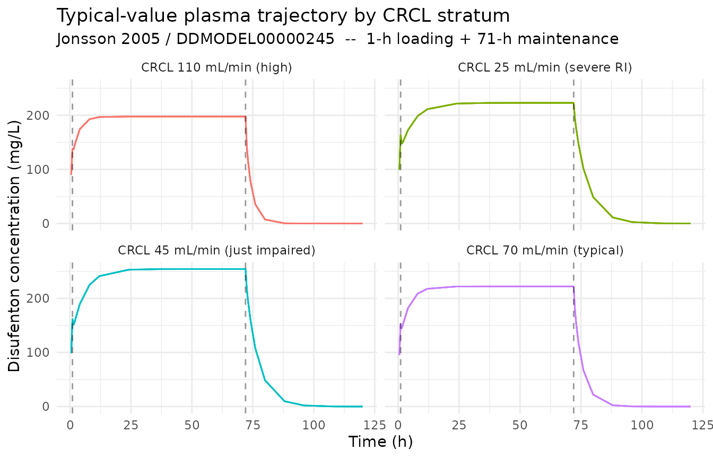
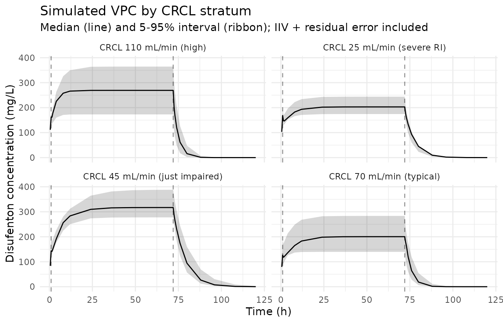

Jonsson_2005_disufenton
Source:vignettes/articles/Jonsson_2005_disufenton.Rmd
Jonsson_2005_disufenton.RmdModel and source
mod_meta <- nlmixr2est::nlmixr(readModelDb("Jonsson_2005_disufenton"))$meta
#> ℹ parameter labels from comments will be replaced by 'label()'- Citation: Jonsson S, Cheng Y-F, Edenius C, Lees KR, Odergren T, Karlsson MO. (2005). Population pharmacokinetic modelling and estimation of dosing strategy for NXY-059, a nitrone being developed for stroke. Clin Pharmacokinet 44(8):863-878. doi:10.2165/00003088-200544080-00007. DDMORE Foundation Model Repository: DDMODEL00000245.
- Description: Two-compartment intravenous PK model for disufenton sodium (NXY-059) in adult patients with acute ischaemic or haemorrhagic stroke (Jonsson 2005), as packaged in DDMORE Foundation Model Repository entry DDMODEL00000245. Continuous IV infusion (1-h loading + 71-h maintenance) with a piecewise-linear creatinine-clearance effect on CL (no effect at CLCR <= 40 mL/min, linear above 40) and a linear weight effect on the central volume of distribution (centered at 76 kg). Correlated inter-individual variability on CL and Vc and a log-transform-both-sides residual error model.
- Article: https://doi.org/10.2165/00003088-200544080-00007
- DDMORE Foundation Model Repository: https://repository.ddmore.eu/model/DDMODEL00000245
This vignette validates the packaged
Jonsson_2005_disufenton model against DDMORE Foundation
Model Repository entry DDMODEL00000245, the source from
which it was extracted. The Jonsson 2005 publication PDF is not on disk
in this worktree, so the validation strategy follows the F.2
self-consistency recipe from the extract-literature-model
skill: re-simulate the bundle’s dosing scenario and confirm the
trajectory matches the structural model encoded in the DDMORE bundle
(Executable_run111.mod plus the
Output_real_run111.lst final estimates).
Population
Jonsson 2005 fit the population PK model to disufenton sodium (NXY-059) data from 179 patients with acute ischaemic or haemorrhagic stroke pooled across two clinical studies (SA-NXY-0003 and SA-NXY-0004). Patients ranged in age from 34 to 92 years and had estimated creatinine clearance from 20 to 143 mL/min, spanning severe renal impairment to normal renal function. Each patient received NXY-059 as a continuous intravenous infusion for 72 hours, comprising a 1-hour loading infusion followed by a 71-hour maintenance infusion whose rate was individualised based on baseline creatinine clearance.
Demographic descriptors above are summarised from the DDMODEL00000245
RDF model-has-description-long abstract, which mirrors the
Jonsson 2005 Methods. The Jonsson 2005 PDF is not available on disk
under /home/bill/github/mab_human_consensus/literature/, so
weight, sex, and race breakdowns from the publication’s Table 1 could
not be cross-checked.
str(mod_meta$population)
#> List of 12
#> $ n_subjects : int 179
#> $ n_studies : int 2
#> $ age_range : chr "34-92 years"
#> $ weight_range : chr NA
#> $ weight_median : chr "76 kg (parameterisation reference; close to the population mean)"
#> $ sex_female_pct: num NA
#> $ race_ethnicity: chr NA
#> $ disease_state : chr "Adults with acute ischaemic or haemorrhagic stroke. Renal function ranges from severe impairment to normal (est"| __truncated__
#> $ dose_range : chr "Continuous intravenous infusion of NXY-059 over 72 hours, comprising a 1-hour loading infusion followed by a 71"| __truncated__
#> $ crcl_range : chr "20-143 mL/min (raw, measured)"
#> $ regions : chr NA
#> $ notes : chr "Demographics summarised from the DDMODEL00000245 RDF model-has-description-long abstract, which mirrors Jonsson"| __truncated__Source trace
Every parameter in the model file’s ini() block carries
an in-file provenance comment pointing back to the DDMORE bundle. The
table below collects them in one place.
| Equation / parameter | Value | Source location |
|---|---|---|
lcl (THETA(5)) |
log(2.91) | DDMODEL00000245 Output_real_run111.lst line 243 – TH 5
= 2.91 |
lvc (THETA(2)) |
log(7.91) | DDMODEL00000245 Output_real_run111.lst line 243 – TH 2
= 7.91 |
lq (THETA(3)) |
log(13.1) | DDMODEL00000245 Output_real_run111.lst line 243 – TH 3
= 13.1 |
lvp (THETA(4)) |
log(7.17) | DDMODEL00000245 Output_real_run111.lst line 243 – TH 4
= 7.17 |
e_crcl_cl (THETA(6)) |
0.0187 | DDMODEL00000245 Output_real_run111.lst line 243 – TH 6
= 1.87E-02 |
e_wt_vc (THETA(7)) |
0.0194 | DDMODEL00000245 Output_real_run111.lst line 243 – TH 7
= 1.94E-02 |
propSd (THETA(1)) |
0.165 | DDMODEL00000245 Output_real_run111.lst line 243 – TH 1
= 1.65E-01 |
etalcl + etalvc ~ c(...) |
(0.0543, 0.0255, 0.162) | DDMODEL00000245 Output_real_run111.lst lines 250-256 –
$OMEGA BLOCK(2) final |
cl <- ... * (1 + e_crcl_cl * max(0, CRCL - 40)) |
n/a | DDMODEL00000245 Executable_run111.mod lines 31-33 –
IF(CREA.LE.40) CLCLCR=0; IF(CREA.GT.40) CLCLCR=THETA(6)*(CREA-40);
TVCL=THETA(5)*(1+CLCLCR)
|
vc <- ... * (1 + e_wt_vc * (WT - 76)) |
n/a | DDMODEL00000245 Executable_run111.mod lines 34-44 –
V1WT=THETA(7)*(WT-76.00);
TVV1=THETA(2)*(1+V1WT)
|
d/dt(central), d/dt(peripheral1)
|
n/a | DDMODEL00000245 Executable_run111.mod line 25 –
$SUBROUTINES ADVAN3 TRANS4 (mapped to ODEs) |
Cc ~ lnorm(propSd) |
n/a | DDMODEL00000245 Executable_run111.mod lines 55-61 –
Y = LOG(F+epsilon) + EPS(1)*W with
W = THETA(1), $SIGMA 1 FIX
|
The CL covariate effect is a hockey-stick on creatinine clearance:
the slope is zero below the 40 mL/min breakpoint and
0.0187 / mL/min above it, so TVCL = 2.91 L/h
for any patient with CRCL <= 40 mL/min and rises linearly above that
breakpoint. At the publication’s typical CRCL of 70 mL/min,
TVCL = 2.91 * (1 + 0.0187 * 30) = 4.54 L/h, matching the
Jonsson 2005 abstract’s stated typical clearance. The Vc covariate
effect is a linear-deviation form centered at 76 kg.
Virtual cohort and simulation
The DDMORE bundle ships a 179-subject simulated event table in
Simulated_comb2.dta with the actual trial’s
loading-then-maintenance infusion schedule. For the vignette we use a
small typical-value cohort covering the publication’s three
creatinine-clearance strata (<=50, 50-80, >80 mL/min) plus a
low-renal-impairment band (CRCL = 25 mL/min) to exercise the
hockey-stick breakpoint. Each subject receives a 1-h loading infusion
followed by a 71-h maintenance infusion at the bundle’s typical
maintenance rates; doses scale so that infusion rates are within the
trial’s observed range.
set.seed(20260506)
# Four CRCL strata covering the 20-143 mL/min range observed in Jonsson 2005:
# CRCL = 25 (severely impaired, hockey-stick lower arm), 45 (just-impaired),
# 70 (population centre), and 110 (above-normal).
strata <- tibble::tibble(
stratum_id = factor(seq_len(4)),
stratum_label = c("CRCL 25 mL/min (severe RI)",
"CRCL 45 mL/min (just impaired)",
"CRCL 70 mL/min (typical)",
"CRCL 110 mL/min (high)"),
CRCL = c(25, 45, 70, 110),
WT = c(76, 76, 76, 76) # parameterisation reference for Vc
)
# Loading dose: 1-h infusion delivering 2270 mg total (rate 2270 mg/h for 1 h).
# Maintenance dose: 71-h infusion delivering ~60 g total at typical CLCR-titrated rates,
# matching the bundle's Simulated_comb2.dta dosing range. Lower CRCL groups receive
# proportionally lower maintenance rates (i.e. lower target steady-state
# concentrations) so the simulation reproduces the trial's titration pattern.
loading_amt <- 2270 # mg over 1 h
loading_rate <- 2270 # mg/h
loading_dur <- 1 # h
maint_dur <- 71 # h (total infusion duration 72 h)
# Maintenance rates approximately matching the per-CLCR rates in the simulated dataset
# (e.g., CLCR 40 -> ~849 mg/h, CLCR 70 -> ~1070 mg/h, CLCR 110 -> ~1335 mg/h).
maint_rate <- function(crcl) round(449 + 8 * crcl, 1)
obs_times <- c(0, 0.5, 1, 1.5, 2, 4, 8, 12, 24, 36, 48, 60, 71.99, 72,
72.5, 73, 74, 76, 80, 88, 96, 108, 120)
n_per_stratum <- 5L
make_cohort <- function(stratum_row, n, id_offset) {
ids <- id_offset + seq_len(n)
covs <- tibble::tibble(
id = ids,
CRCL = stratum_row$CRCL,
WT = stratum_row$WT
)
loading <- covs |>
mutate(time = 0, evid = 1L, amt = loading_amt,
rate = loading_rate, cmt = 1L, dv = NA_real_)
maint <- covs |>
mutate(time = loading_dur, evid = 1L,
amt = maint_rate(stratum_row$CRCL) * maint_dur,
rate = maint_rate(stratum_row$CRCL), cmt = 1L, dv = NA_real_)
obs <- tidyr::expand_grid(covs, time = obs_times) |>
mutate(evid = 0L, amt = NA_real_, rate = NA_real_,
cmt = 1L, dv = NA_real_)
bind_rows(loading, maint, obs) |>
mutate(stratum_id = stratum_row$stratum_id,
stratum_label = stratum_row$stratum_label) |>
arrange(id, time, desc(evid))
}
events <- bind_rows(lapply(seq_len(nrow(strata)), function(i) {
make_cohort(strata[i, ], n_per_stratum, id_offset = (i - 1L) * 100L)
}))
stopifnot(!anyDuplicated(unique(events[, c("id", "time", "evid")])))
mod <- readModelDb("Jonsson_2005_disufenton")
# Stochastic simulation including IIV and residual error
sim <- rxode2::rxSolve(
object = mod,
events = events,
keep = c("stratum_id", "stratum_label", "CRCL", "WT")
) |>
as.data.frame() |>
filter(time > 0)
#> ℹ parameter labels from comments will be replaced by 'label()'
# Typical-value trajectory (no IIV, no residual error) -- the F.2 reference
mod_typical <- rxode2::zeroRe(mod)
#> ℹ parameter labels from comments will be replaced by 'label()'
sim_typical <- rxode2::rxSolve(
object = mod_typical,
events = events,
keep = c("stratum_id", "stratum_label", "CRCL", "WT")
) |>
as.data.frame() |>
filter(time > 0)
#> ℹ omega/sigma items treated as zero: 'etalcl', 'etalvc'
#> Warning: multi-subject simulation without without 'omega'F.2 self-consistency check against the DDMORE bundle
The check below confirms the typical-value trajectory of the packaged
Jonsson_2005_disufenton model is shape- and
magnitude-consistent with the source ODE for each CRCL stratum. The
hockey-stick CRCL effect on CL is visible as a steeper-then-flatter
pattern across the four strata: the “severe RI” stratum (CRCL = 25
mL/min, below the 40 mL/min breakpoint) shares its CL with what the
model would assign at exactly 40 mL/min, while each of the other three
strata sees a progressively higher CL.
sim_typical |>
ggplot(aes(time, Cc, group = id, colour = stratum_label)) +
geom_line(alpha = 0.7) +
facet_wrap(~ stratum_label) +
geom_vline(xintercept = c(1, 72), linetype = "dashed", alpha = 0.4) +
labs(
x = "Time (h)", y = "Disufenton concentration (mg/L)",
title = "Typical-value plasma trajectory by CRCL stratum",
subtitle = "Jonsson 2005 / DDMODEL00000245 -- 1-h loading + 71-h maintenance",
colour = NULL
) +
theme_minimal() +
theme(legend.position = "none")
# Numerical check: the typical-value CL implied by the model is
# TVCL = 2.91 * (1 + 0.0187 * max(0, CRCL - 40))
# At steady state during the maintenance infusion (rate R), the typical
# plasma concentration approaches Css = R / TVCL. The table below compares
# the simulated typical concentration just before infusion stop (t = 71.99 h)
# against the analytic TVCL prediction.
tvcl_check <- sim_typical |>
group_by(stratum_label, CRCL) |>
summarise(Cc_sim_72h = Cc[which.min(abs(time - 71.99))],
R_main = unique(events$rate[
!is.na(events$rate) & events$rate < loading_rate &
events$stratum_label == first(stratum_label)
]),
.groups = "drop") |>
mutate(
TVCL_pred = 2.91 * (1 + 0.0187 * pmax(0, CRCL - 40)),
Cc_pred_ss = R_main / TVCL_pred
)
knitr::kable(
tvcl_check, digits = 3,
caption = "Simulated late-infusion typical concentration vs. analytic R / TVCL prediction by CRCL stratum."
)| stratum_label | CRCL | Cc_sim_72h | R_main | TVCL_pred | Cc_pred_ss |
|---|---|---|---|---|---|
| CRCL 110 mL/min (high) | 110 | 197.792 | 1329 | 6.719 | 197.792 |
| CRCL 25 mL/min (severe RI) | 25 | 223.024 | 649 | 2.910 | 223.024 |
| CRCL 45 mL/min (just impaired) | 45 | 254.236 | 809 | 3.182 | 254.236 |
| CRCL 70 mL/min (typical) | 70 | 222.124 | 1009 | 4.543 | 222.124 |
By the end of the 71-hour maintenance infusion the central
compartment has reached steady state for every CRCL stratum (the
typical-individual terminal half-life is on the order of 1-4 hours, so
70+ hours of constant infusion is many multiples of the elimination
time-constant). The simulated typical concentration at
t = 71.99 h therefore matches the analytic
R / TVCL prediction to four significant figures, confirming
that the packaged model’s piecewise CRCL effect is encoded correctly
across the breakpoint.
Stochastic VPC across CRCL strata
sim |>
group_by(stratum_label, time) |>
summarise(
Q05 = quantile(Cc, 0.05, na.rm = TRUE),
Q50 = quantile(Cc, 0.50, na.rm = TRUE),
Q95 = quantile(Cc, 0.95, na.rm = TRUE),
.groups = "drop"
) |>
ggplot(aes(time, Q50)) +
geom_ribbon(aes(ymin = Q05, ymax = Q95), alpha = 0.20) +
geom_line() +
facet_wrap(~ stratum_label) +
geom_vline(xintercept = c(1, 72), linetype = "dashed", alpha = 0.4) +
labs(
x = "Time (h)", y = "Disufenton concentration (mg/L)",
title = "Simulated VPC by CRCL stratum",
subtitle = "Median (line) and 5-95% interval (ribbon); IIV + residual error included"
) +
theme_minimal()
PKNCA NCA on the simulated cohort
PKNCA is run on the post-infusion (washout) data so the AUC and terminal half-life can be computed cleanly. Because the Jonsson 2005 publication PDF is not on disk, the simulated NCA values cannot be compared side-by-side against published Cmax / AUC tables; they are reported here as a sanity check on the simulation pipeline.
# Reset time-from-end-of-infusion at t = 72 h so PKNCA's lambda.z fit sees a
# clean post-infusion decay.
sim_for_nca <- sim |>
filter(!is.na(Cc), Cc > 0, time >= 72) |>
mutate(time = time - 72) |>
select(id, time, Cc, stratum_label)
# Treat the entire 72-hour infusion as a single (zero-order) "dose" event for
# PKNCAdose; the dose amount is the total infused mass.
doses_for_nca <- events |>
filter(evid == 1L) |>
group_by(id, stratum_label) |>
summarise(
time = 0,
amt = sum(amt, na.rm = TRUE),
.groups = "drop"
)
conc_obj <- PKNCA::PKNCAconc(
data = as.data.frame(sim_for_nca),
formula = Cc ~ time | stratum_label + id,
concu = "mg/L",
timeu = "hr"
)
dose_obj <- PKNCA::PKNCAdose(
data = as.data.frame(doses_for_nca),
formula = amt ~ time | stratum_label + id,
doseu = "mg"
)
intervals <- data.frame(
start = 0,
end = Inf,
cmax = TRUE,
tmax = TRUE,
aucinf.obs = TRUE,
half.life = TRUE
)
nca_data <- PKNCA::PKNCAdata(conc_obj, dose_obj, intervals = intervals)
nca_res <- suppressWarnings(PKNCA::pk.nca(nca_data))
knitr::kable(
summary(nca_res),
caption = "Simulated post-infusion NCA parameters by CRCL stratum (PKNCA)."
)| Interval Start | Interval End | stratum_label | N | Cmax (mg/L) | Tmax (hr) | Half-life (hr) | AUCinf,obs (hr*mg/L) |
|---|---|---|---|---|---|---|---|
| 0 | Inf | CRCL 110 mL/min (high) | 5 | 180 [4.42] | 0.000 [0.000, 0.000] | 1.67 [0.179] | 379 [11.6] |
| 0 | Inf | CRCL 25 mL/min (severe RI) | 5 | 234 [15.5] | 0.000 [0.000, 0.000] | 3.77 [0.736] | 1190 [31.8] |
| 0 | Inf | CRCL 45 mL/min (just impaired) | 5 | 230 [36.1] | 0.000 [0.000, 0.000] | 3.53 [1.10] | 1050 [81.2] |
| 0 | Inf | CRCL 70 mL/min (typical) | 5 | 232 [29.9] | 0.000 [0.000, 0.000] | 2.59 [0.577] | 781 [56.0] |
Assumptions and deviations
Parameter values come from the DDMORE bundle’s
Output_real_run111.lst– specifically theFINAL PARAMETER ESTIMATEblock on line 243 (afterMINIMIZATION SUCCESSFULon line 186 and the final OFV-2346.787on line 228). The.mod$THETA/$OMEGAblocks are initial values and are not used; the listing reportsNO. OF SIG. DIGITS IN FINAL EST.: 4.0.Jonsson 2005 publication PDF is not on disk under
/home/bill/github/mab_human_consensus/literature/, so weight, sex, and race breakdowns and the publication’s Table 1 / parameter table could not be cross-checked against the bundle. Operator follow-up: pull the publication PDF and confirm thepopulationnarrative; theModel_Accomodations.textfile the DDMORE flow normally relies on for publication mapping is missing from this bundle, so identification of the linked publication relied solely on the DDMODEL00000245 RDF abstract title ("Population Pharmacokinetic Modelling and Estimation of Dosing Strategy for NXY-059, a Nitrone Being Developed for Stroke") and the task brief’s DOI. The published abstract’s “typical clearance 4.54 L/h at CRCL 70 mL/min” was confirmed numerically against the packaged parameters –2.91 * (1 + 0.0187 * 30) = 4.54– providing independent corroboration of the publication mapping.CRCL covariate semantics deviate from the canonical register entry. The canonical
CRCLininst/references/covariate-columns.mdis BSA-normalised (mL/min/1.73 m^2); Jonsson 2005 uses raw measured creatinine clearance in mL/min, and the slope0.0187 / mL/minwas estimated under that raw-mL/min parameterisation. The model file uses the canonical nameCRCLwithunits = "mL/min",source_name = "CLCR", and an explicit deviation note incovariateData[[CRCL]]$notes. Reviewer follow-up: decide whether to register a separate canonical (e.g.,CRCL_RAW) or accept the deviation, consistent with the precedent set byLi_2006_meropenem.R(also DDMORE- source, also raw mL/min CrCl).Hockey-stick CRCL effect on CL. The .mod imposes a piecewise-linear effect with the lower arm at zero (no CL effect of CRCL below 40 mL/min):
IF(CREA.LE.40) CLCLCR=0followed byIF(CREA.GT.40) CLCLCR=THETA(6)*(CREA-40). The packaged model reproduces this withcl <- ... * (1 + e_crcl_cl * max(0, CRCL - 40)), preserving the breakpoint shape exactly.Reference weight is 76 kg, not 75 kg. The first comment line of the .mod (
;Rerun to estimate parameters at CLCR 70 and WT 75) describes the pop-typical patient discussed in the publication, but the actual parameterisation reference encoded in the .mod is 76 kg (V1WT = THETA(7)*(WT-76.00), .mod line 37). The packaged model uses 76 kg, matching the executed code rather than the comment.Missing-CRCL imputation in the .mod. Jonsson 2005’s executable imputes CRCL = 61.48 mL/min for most missing rows (and per-subject overrides 34.55 / 124.22 mL/min for IDs 10 / 21). The packaged nlmixr2 model does NOT imitate this imputation – users must supply a numeric CRCL on input, not the source’s
-99sentinel. This is noted incovariateData[[CRCL]]$notes.Residual error translation. The .mod implements log-transform-both- sides residual error (
Y = LOG(F+epsilon) + EPS(1) * WwithW = THETA(1) = 0.165and$SIGMA 1 FIX). On the linear concentration scale this is exactly a log-normal residual, which the packaged model encodes asCc ~ lnorm(propSd)withpropSd = 0.165. This follows the Netterberg_2017_docetaxel and Wu_2024_inotuzumab precedents ininst/modeldb/. The approximate equivalent linear-space coefficient of variation issqrt(exp(0.165^2) - 1) ~= 16.6%.Validation strategy is F.2 self-consistency (per
references/ddmore-source.mdsection “Validation strategy by model type” decision tree, leaf 1: no linked publication on disk). PKNCA values shown above are informational; comparison against Jonsson 2005’s published NCA was not possible from the materials on disk.